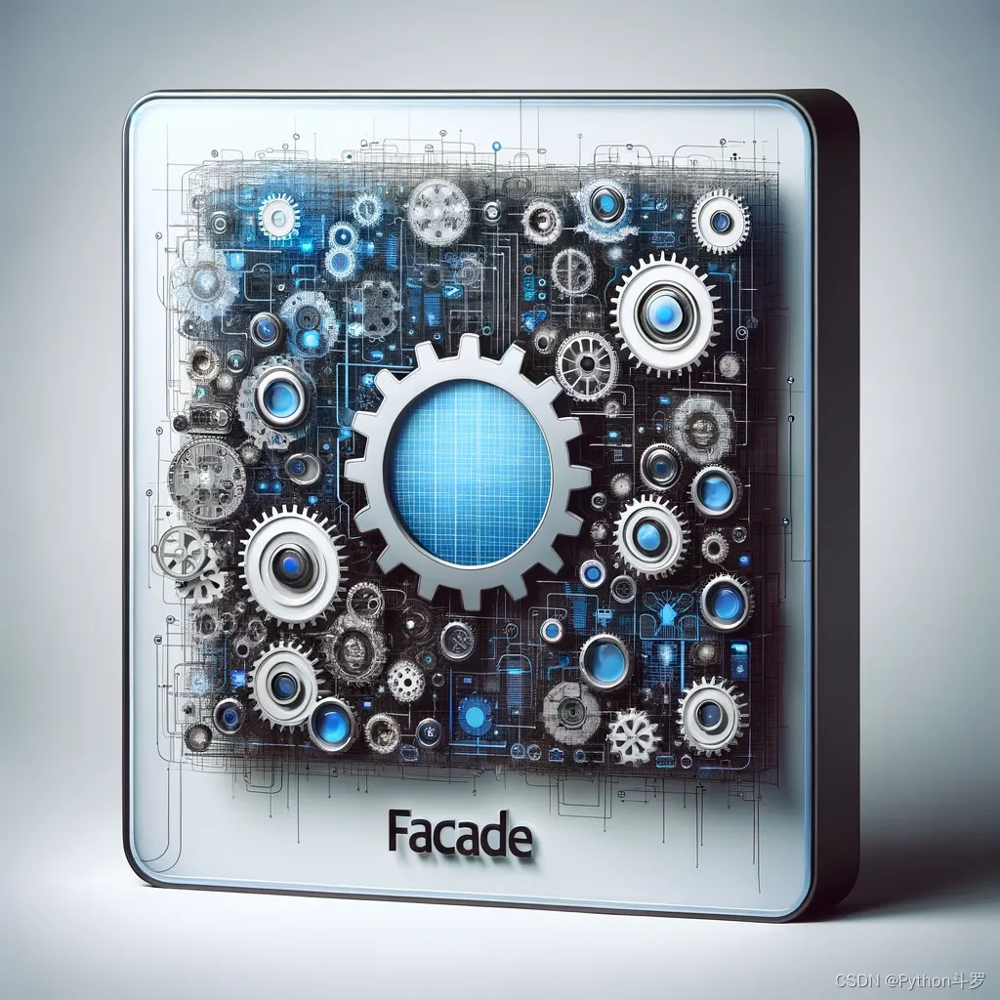

外观模式：简化复杂系统的统一接口
在面向对象的软件开发中，外观模式是一种常用的结构型设计模式，旨在为复杂的系统提供一个简化的接口。通过创建一个统一的高级接口，这个模式帮助客户端通过一个简单的方式与复杂的子系统交互。本文将详细介绍外观模式的定义、实现、应用场景以及优缺点。

1. 外观模式的定义
外观模式（Facade Pattern）通过定义一个统一的接口，来封装多个复杂的子系统，使子系统更加容易使用。外观不仅简化了整个系统的接口，还将客户端从系统的复杂性中解耦。
2. 实现外观模式
在Python中，实现外观模式通常涉及创建一个类来封装对各个子系统的调用。以下是一个实现示例：
class Subsystem1:
"""子系统1定义了一些复杂的逻辑，通常只能在系统内部使用。"""
def operation1(self):
return "Subsystem1: Ready!\n"
def operation2(self):
return "Subsystem1: Go!\n"
class Subsystem2:
"""子系统2和子系统1功能相似，实现了一些独立的功能。"""
def operation1(self):
return "Subsystem2: Get ready!\n"
def operation2(self):
return "Subsystem2: Fire!\n"
class Facade:
"""外观类提供了简单的接口来访问复杂的子系统逻辑。"""
def __init__(self, subsystem1, subsystem2):
self._subsystem1 = subsystem1 or Subsystem1()
self._subsystem2 = subsystem2 or Subsystem2()
def operation(self):
results = "Facade initializes subsystems:\n"
results += self._subsystem1.operation1()
results += self._subsystem2.operation1()
results += "Facade orders subsystems to perform the action:\n"
results += self._subsystem1.operation2()
results += self._subsystem2.operation2()
return results
# 客户端代码
facade = Facade(None, None)
print(facade.operation())
3. 外观模式的应用实例
外观模式在软件开发中有广泛的应用，尤其适用于以下场景：
- 系统很复杂或者有多个依赖的子系统时：通过外观提供一个简单的接口，使得子系统更容易使用。
- 分层结构：在多层结构中使用外观作为每一层的入口点，可以简化层间的通信。
4. 优点和缺点
优点：
- 简化了客户端的操作：通过使用外观，客户端可以通过单一简单的接口与复杂的子系统进行交互。
- 减少系统与客户端之间的耦合：外观可以让子系统更容易独立于客户端演化和操作。
缺点：
- 不符合开闭原则：添加新的子系统可能需要修改外观类或客户端的源代码，这可能会带来风险。
5. 总结
外观模式提供了一种有效的方式来隐藏系统的复杂性，并提供一个客户端可以轻松访问的接口。在您需要为复杂的子系统提供一个简单的接口时，考虑使用外观模式，这将大大降低实现复杂度和维护成本。